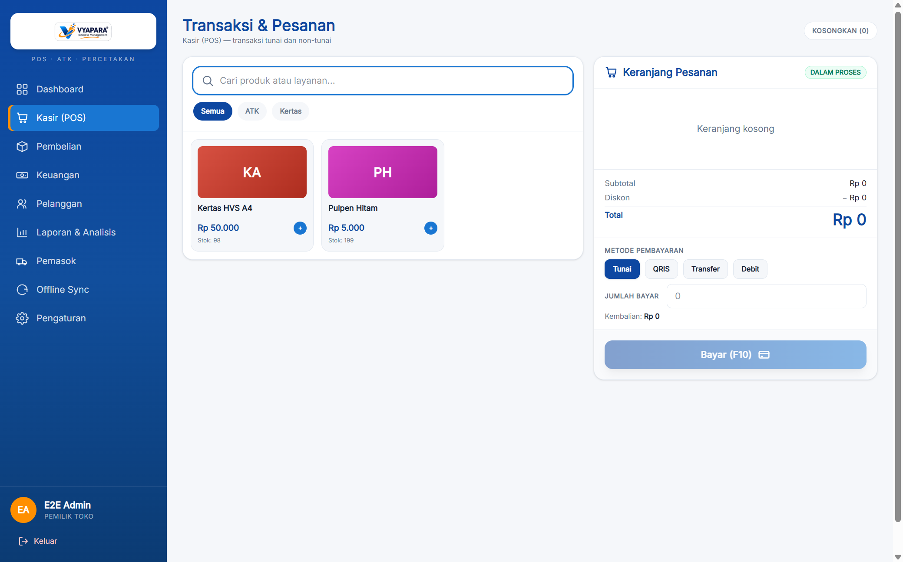

Tampilan kasir: katalog kiri (pencarian + filter kategori), panel keranjang kanan (tabel item, total, metode bayar, tombol Bayar).
| Area | Fungsi |
|---|---|
| Pencarian produk (kiri atas) | Ketik nama/SKU/barcode — hasil langsung muncul. Tombol kategori (Semua, ATK, Kertas) mempersempit daftar |
| Grid produk (kiri) | Ubin produk dengan ikon inisial berwarna + harga + stok saat ini. Klik ubin untuk menambah ke keranjang |
| Panel “Keranjang Pesanan” (kanan) | Tabel item: Item | Qty (+/−) | Harga | Subtotal | 🗑 hapus; badge jumlah item; status “Dalam Proses” |
| Total & pembayaran (kanan bawah) | Subtotal, Diskon, Total; chip metode bayar; Jumlah Bayar (tunai) & Kembalian; tombol Bayar (F10) |
| Struk (muncul setelah bayar) | Modal “Contoh Nota / Struk” berisi ringkasan + tombol Cetak Nota (struk pelanggan) & Cetak DO (Surat Jalan/Delivery Order) |

Layar kasir segar (keranjang kosong, checkout nonaktif). Struk sekarang memiliki dua tombol: Cetak Nota (struk pelanggan) dan Cetak DO (Delivery Order/Surat Jalan untuk pengiriman).
| Metode | Kapan digunakan | Catatan |
|---|---|---|
| Tunai | Pembayaran di tempat dengan uang tunai | Wajib isi “Jumlah Bayar”; kembalian otomatis |
| QRIS | Pembayaran via QRIS/GoPay/OVO/DANA/ShopeePay | Nominal dibayar = Total; kembalian tidak relevan |
| Transfer | Transfer bank (BCA/Mandiri/BRI/BNI dll) | Nominal = Total; cocok pembayaran B2B |
| Debit | Kartu debit EDC | Nominal = Total |
| Kredit | Pembelian atas nama pelanggan dengan tempo (piutang) | Pelanggan harus dipilih (lihat Bab 6); piutang tercatat otomatis |
INV-YYYYMMDD-<part> (mis. INV-20261116-D77FD1). Nomor ini menjadi kunci deduplication saat sinkronisasi multi-perangkat — aman untuk cetak ulang.Cetak Nota: klik → dialog print → pilih printer thermal. Cetak DO: klik Cetak DO (Bab 16) untuk dokumen pengiriman barang.
Setiap item pada transaksi mengurangi stok produk saat itu juga. Produk dengan stok 0 otomatis tidak bisa ditambahkan ke keranjang (tombol dikunci bila stok habis). Pantau stok menipis dari Dashboard → panel Stok Menipis.
Seluruh operasi checkout berjalan dalam satu transaksi database SQLite. Jika komputer mati/reboot di tengah transaksi, semua perubahan di-rollback — stok dan transaksi konsisten; tidak ada “transaksi separuh”. Outbox event yang sudah tertulis tetap aman dan disinkronkan saat aplikasi dibuka kembali.